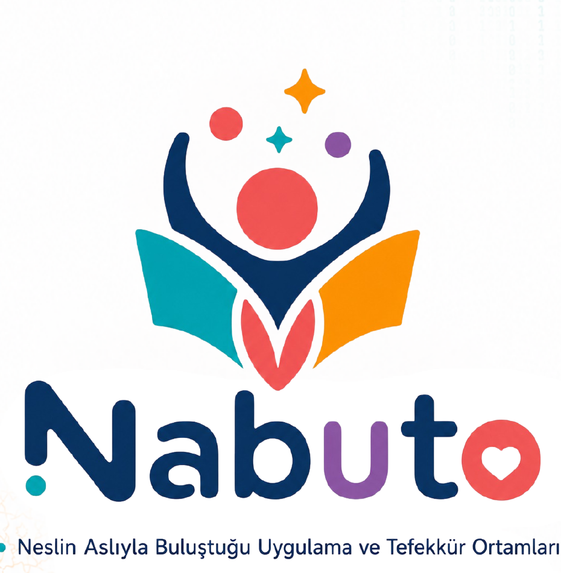

Misyon
Çocukların, gençlerin ve ailelerin kendi kökleriyle yeniden bağ kurabilecekleri; düşünmeyi, üretmeyi ve uygulamayı merkeze alan sosyal, dijital ve fiziksel gelişim ortamları oluşturmak.

NESLİN ASLIYLA BULUŞTUĞU UYGULAMA VE TEFEKKÜR ORTAMLARI
NABUTO; çocukların, gençlerin ve ailelerin kendi kökleriyle yeniden bağ kurmasını amaçlayan; sosyal, dijital ve fiziksel uygulama ve tefekkür ortamları ile medeniyetimizin bekasına hizmet eden dinamik bir harekettir.
“Neden olmadı?” sorusuna takılıp kalmanın değil; “Nasıl olmalı?” sorusunun peşinden yürüyenlerin hikâyesi.
NABUTO NEDİR?
Çocukların, gençlerin ve ailelerin kendi kökleriyle yeniden bağ kurabilecekleri; düşünmeyi, üretmeyi ve uygulamayı merkeze alan sosyal, dijital ve fiziksel gelişim ortamları oluşturmak.
Geleneğin hikmetini geleceğin imkânlarıyla buluşturan; kendi köklerinden güç alan, çağın bilgi ve teknolojisini doğru kullanan, düşünen, üreten ve insanlığa değer katan nesillere öncülük etmek.
GELİŞİM EKOSİSTEMİ
Cami merkezli buluşmalar ve eğitimlerle namazı hayatın doğal bir parçası hâline getiren programlar.
Ödüllü, eğlenceli ve motive edici etkinliklerle çocuklarda namaz alışkanlığını pekiştiren yarışmalar.
Tarihî ve manevî merkezleri keşif, oyun ve öğrenmeyle buluşturan aile deneyimleri.
Üç nesli namaz, eğitim, kültür, sanat, spor ve helal eğlence etrafında buluşturan aile festivali.
Dijital keşiften doğaya, kardeşliğe ve hizmete uzanan bütüncül izcilik yaklaşımı.
Doğa, değer, üretim ve deneyim temelli yerli ve millî eğitim modelinin uygulama alanı.
NABUTOFEST
NabutoFest; çocukları, gençleri, aileleri ve büyükleri namaz merkezli bir hayat anlayışı etrafında buluşturan; helal eğlence, kültür, eğitim, spor, sanat ve gönüllülüğü aynı çatı altında bir araya getiren büyük bir aile festivalidir.
İş Birliği YapBİRLİKTE DAHA BÜYÜK BİR ETKİ
Marka görünürlüğünün ötesinde, çocuklara ve ailelere kalıcı değer sunan bir sosyal etki ortaklığı.
Gönüllü insan kaynağı, atölye, eğitim, rehberlik, lojistik ve saha hizmetleriyle ortak değer üretimi.
Alan, ulaşım, teknik destek, eğitim stantları ve sosyal fayda odaklı programlarla güçlü iş birlikleri.
İLETİŞİM
Projeler, gönüllülük, kurumsal iş birliği ve sponsorluk görüşmeleri için bizimle iletişime geçin.